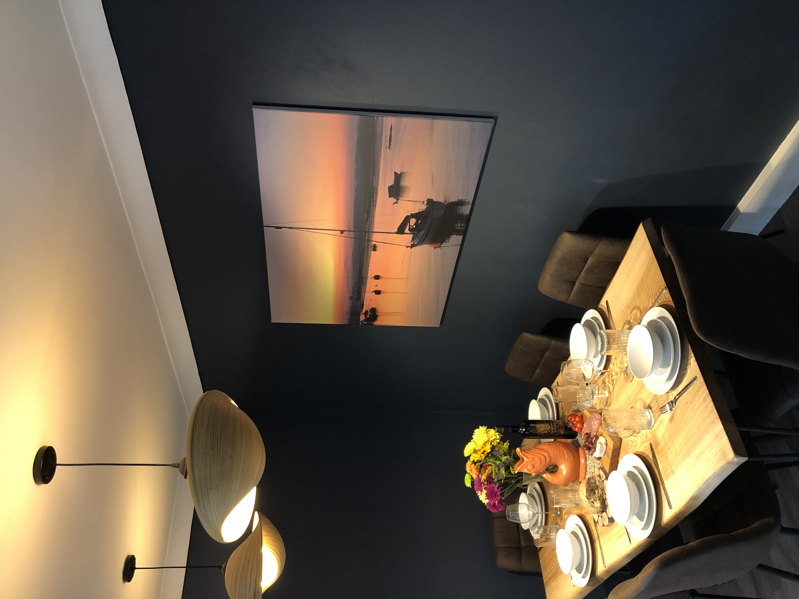
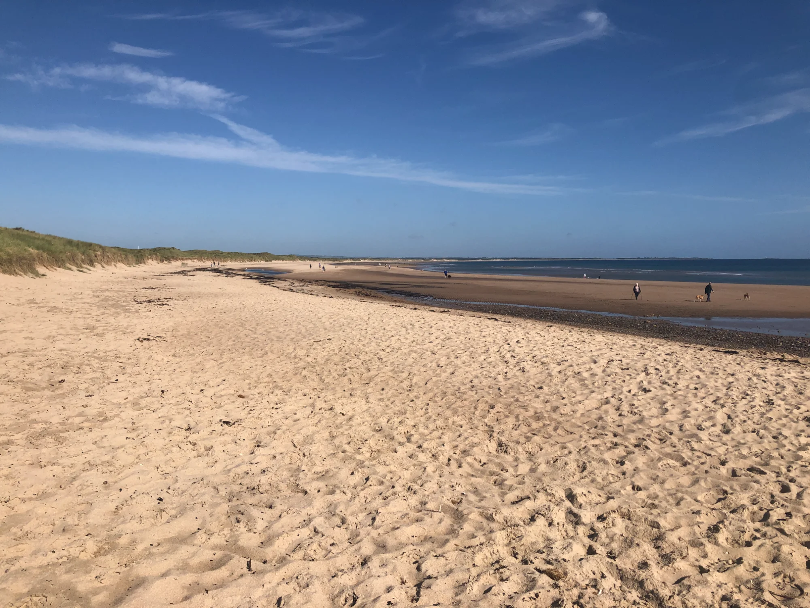
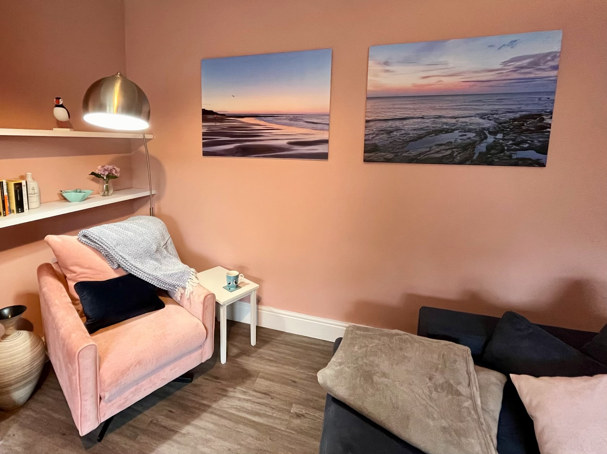

As local hosts, we've put together our personal recommendations to help you make the most of your stay. From iconic castles to hidden gems, there's something for everyone.
Must Visit
One of England's most iconic castles, dramatically perched on a basalt outcrop overlooking miles of golden beach. Over 1,400 years of history await.
The second-largest inhabited castle in England, famous for its role in Harry Potter. The Alnwick Garden next door is equally impressive.
 Spiritual
Spiritual
A tidal island steeped in Christian history. Visit the ancient priory ruins and Lindisfarne Castle. Check tide times before crossing!

WalkersDramatic 14th-century ruins accessible only by foot along the stunning coastal path. One of the most atmospheric castle walks in England.
 Wildlife
Wildlife
Take a boat trip from Seahouses to see puffins (April-July), grey seals, and thousands of seabirds. A truly unforgettable wildlife experience.

StargazingNorthumberland hosts one of Europe's largest Dark Sky Parks. On clear nights, witness spectacular stargazing with minimal light pollution.

WalkingMiles of well-maintained coastal paths offer stunning views of beaches, dunes, and castles. Perfect for all abilities.
 Beaches
Beaches
From Bamburgh to Beadnell, enjoy some of the finest beaches in Britain. Clean, uncrowded, and perfect for dogs and families.
 Fine Dining
Fine Dining
[Placeholder: Add your recommended restaurants here - perhaps gastropubs, seafood restaurants, or local favourites with opening times and booking advice.]
 Tea & Cake
Tea & Cake
[Placeholder: Add your favourite tea rooms and cafés - perfect for after a walk or castle visit. Include any with dog-friendly seating.]
 Pubs
Pubs
[Placeholder: Add recommended local pubs - those with good food, real ales, cosy fires, and a warm welcome for visitors and dogs alike.]
[Placeholder: Add local farm shops and delis where guests can pick up local cheeses, meats, fresh produce, and Northumberland specialities.]
[Placeholder: Northumberland has excellent links courses. Add details of nearby courses, booking information, and any visitor green fee arrangements.]
Water Sports
[Placeholder: Add details of kayaking, paddleboarding, surfing lessons or equipment hire available in the area.]
Cycling
[Placeholder: Add information about local cycling routes, bike hire facilities, and any particularly scenic rides in the area.]
[Placeholder: Add family-friendly activities - adventure parks, beaches with rock pools, gentle walks, rainy day activities, etc.]
[Placeholder: Add details of nearest supermarkets, convenience stores, and opening hours.]
[Placeholder: Add nearest petrol station locations and any EV charging points in the area.]
[Placeholder: Add nearest pharmacy, doctor's surgery, and hospital for emergencies.]
[Placeholder: Add nearest vets, dog-friendly beaches (and any seasonal restrictions), and pet shops.]
Book your stay at Puffling Cottage and discover all that Northumberland has to offer.
Make an Enquiry